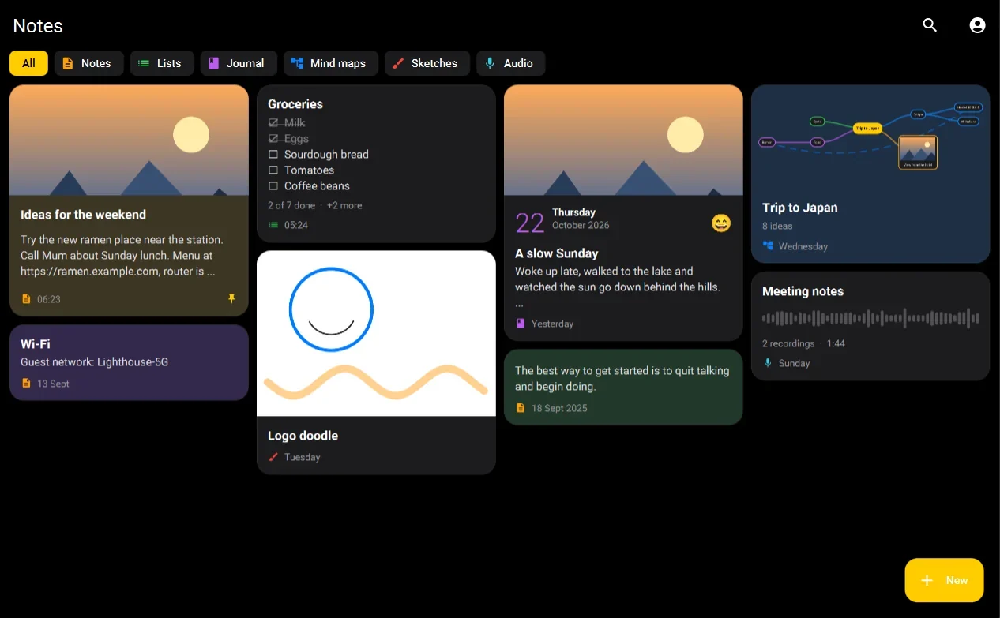
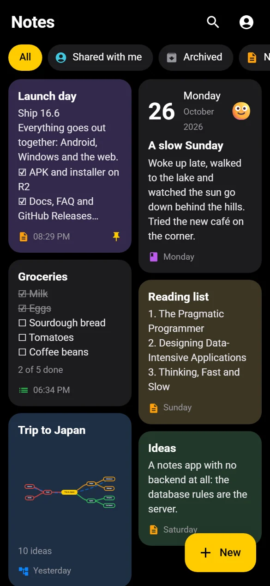
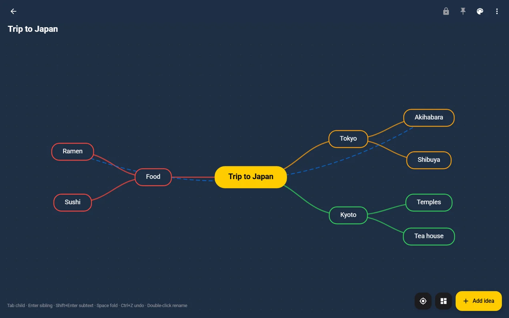

The original
Native Android in Java — the notes app, the hidden vaults, Drive backups and verified self-updates. Android 7.0+.
v16.6 live · Android · Windows · Web
Backend Zero. Everything else, infinite.
A notes ecosystem across Android, Windows and the web — one account, live sync — with no servers of its own. Hosted for free, existing for free, and so free for everyone who uses it. And beneath the plain notes app, two hidden, encrypted spaces that nobody knows are there.



Where it began
Notes+ isn’t a new app — it’s my old desktop editor, Notes, redesigned from the ground up and extended far beyond what it could do.
 2024 · Notes · Java Swing
Notes
One kind of note, one platform, a home-made cipher.
2024 · Notes · Java Swing
Notes
One kind of note, one platform, a home-made cipher.
Backend Zero
There is no Notes+ API and no server code anywhere. Every piece runs on a free tier, so the app costs nothing to keep alive — and nothing to use.
Static files on GitHub Pages.
Firebase Authentication — verified email or Google only.
Firebase Realtime Database. Its security rules are the whole backend.
Each user's own Google Drive.
Cloudflare R2 and GitHub Releases, announced by one version.json.
The clients do the work. With no server to lean on, everything a backend normally does lives in the apps themselves — and in about a page of database rules.
The ecosystem
Edit on Windows, review on Android, open it anywhere on the web. Each app is native to its platform, and all three speak the same format.
Native Android in Java — the notes app, the hidden vaults, Drive backups and verified self-updates. Android 7.0+.
A JavaFX app that looks and behaves like the phone and syncs through the same account. Installer or portable, Java built in.
Vanilla JS, installable as an app and fully offline — Notes+ on macOS, iPhone, iPad and Linux.
Hidden vault architecture
On the surface, the Android app is exactly what it looks like. Underneath, behind a secret gesture, are two encrypted spaces — designed so that nothing on the phone gives them away.
Separate tables, separate auto-lock, separate settings and backups. No screen, string or setting in one ever refers to the other — so finding one reveals nothing about the second.
Everything is encrypted with a random vault data key. Your PIN, password or pattern just wraps that key — so changing a lock rewrites about 200 bytes and never re-encrypts a single photo.
Media is sealed with Tink streaming AEAD in 4 KB segments under an Android Keystore master key. Videos decrypt as they play, seekable, without ever being written out.
Decrypted media lives in memory; the one exception, the share folder, is swept every time a vault opens.
No vault code talks to Firebase, and there is no analytics, crash reporting or remote config at all — automatic screen reporting would name the vault's screens.
Screenshots blocked by default, auto-lock on leave, a persisted lockout, PBKDF2 at 210,000 iterations, and an optional backup password for when a 4-digit PIN isn't enough.
Every backup is a new restore point of ciphertext in your own Google Drive — never overwritten, restorable on a new phone.
Free · open source · GPL-3.0
Android 7.0+, Windows 10/11 with Java built in, and the web on everything else.